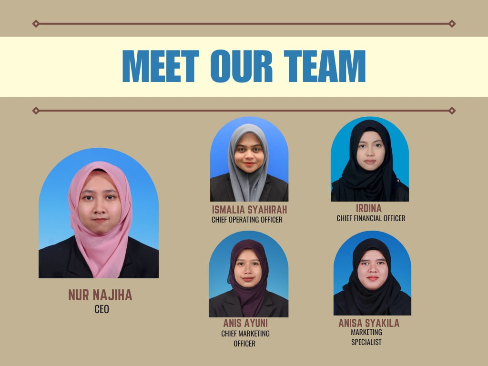

<html>
<body>
</body>
</html>
<!DOCTYPE html>
<head><title>Organization Chart</title></head>
<body>
<header>
<style>
     body{
	  background-image:url("gam3.jpg");
	  background-repeat: no-repeat;
	  background-attachment: fixed;
	  background-size: cover;}
</style>

<head>
<meta name="viewport" content="width=device-width, initial-scale=1">
<style>
body {
  margin: 0;
  background-color: #f1f1f1;
  font-family: Arial, Helvetica, sans-serif;
}

#navbar {
  background-color: #445688;
  position: fixed;
  top: -50px;
  width: 100%;
  display: block;
  transition: top 0.3s;
}

#navbar a {
  float: left;
  display: block;
  color: #f2f2f2;
  text-align: center;
  padding: 15px;
  text-decoration: none;
  font-size: 17px;
}

#navbar a:hover {
  background-color: #8E80CF;
  color:black;
}
</style>
</head>
<body>

<div id="navbar">
<td><a href="index.html">Home</a></td>
<td><a href="about.html">About</a></td>
<td><a href="char.html">Organization Chart</a></td>
<td><a href="prod.html">Products</a></td>
<td><a href="price.html">Price</a></td>
<td><a href="contact.html">Contact</a></td>

</div>

<div style="padding:15px 15px 100px;font-size:30px">
 </div>

<script>
// When the user scrolls down 20px from the top of the document, slide down the navbar
window.onscroll = function() {scrollFunction()};

function scrollFunction() {
  if (document.body.scrollTop > 20 || document.documentElement.scrollTop > 20) {
    document.getElementById("navbar").style.top = "0";
  } else {
    document.getElementById("navbar").style.top = "-50px";
  }
}
</script>

<h1 style="font-family:Georgia; color: white; font-size:50px; text-align:center;">Position In Our Company</h1>
<h1 style="background-color: white; font-family:broadway; text-align:center; color: grey;">Organization Chart</h1>
<center></center>
<h2 style="font-family:Serif; text-align:center; color: white;">Position in Heavenly Bites Company:</h2></header>


<h3 style="font-family:Serif; text-align:center; color: white;">Nur Najiha binti Anuar (21 years old) as the CEO of the Company. She is from Kelantan and a degree holder. she have a lot of experience about operating the business.The Chief Operating Officer is Ismalia Syahirah (21 years old) also from Kelantan and have degree in Business Management. Next,Irdina binti Ahmad Kamaruzzaman as a Chief Financial Officer (21 years old) from Perak a degree holder in Finance. She is the who managing the company budget and financial. The next person is Nur Anis Ayuni binti Mohd Sukri (21 years old) from Kelantan as a Chief Marketing Officer who are responsible in marketing field. She lead the marketing management. The last person is Nursiti Anisa Syakila binti Ismail(21 years old) as a Marketing Specialist.She is also from Kelantan. She is responsible in marketing and promoting the products. These people hold an important position in Heavenly Bites company which is leading the other workers.</h3>
</header>

<hr>
<footer>
Copyright &copy; H.Bites 2024-2025
</footer>


</body>
</html>